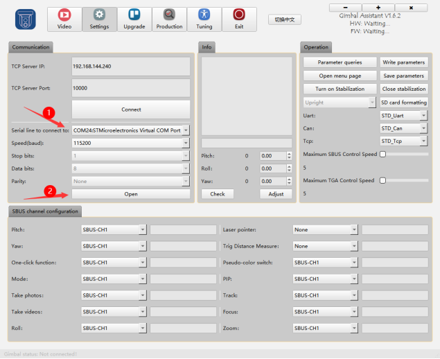
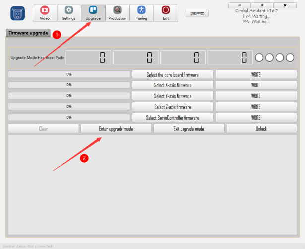
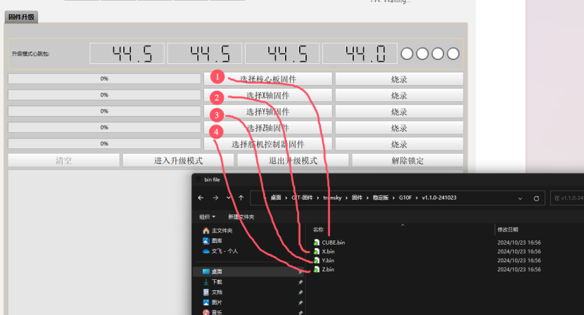
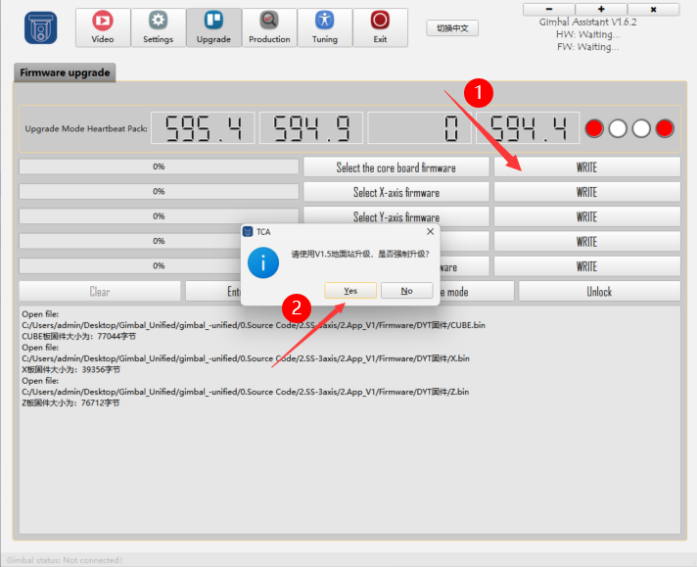
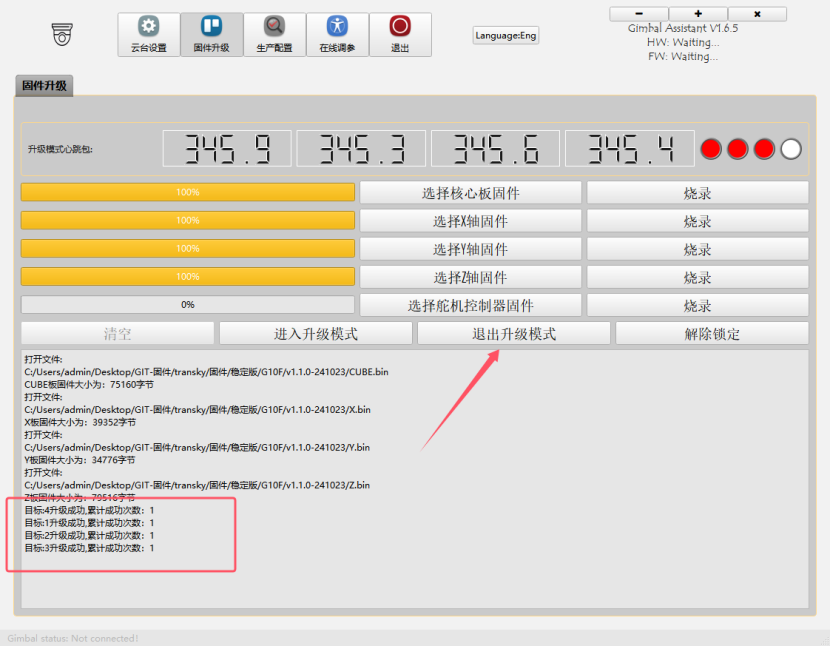

云台设置与升级指南
一、连接云台
1. 云台接通电源
2. TYPE-C插入云台接口
3. 打开TGA，选择对应的串口
点击“打开”，参数默认为 115200 - 8N1，成功后会出现连接成功的弹窗。

二、固件升级
1. 进入升级模式

2. 回到主界面
点击“关闭串口”按钮 --> “打开串口”按钮 --> 进入升级模式

3. 选择升级文件
选择要升级的文件。

!!! note "升级提示"
WRITE时请等待进度条到达 100% 后再点击“WRITE”下一个。


注：
- 如果遇到升级失败的情况，请插拔 Type-C 线缆后重新升级一次即可。
4. 升级完成
点击“退出升级”按钮。

三、重启云台
以上步骤完成后，请断电重启云台，并拔出 TYPE-C 连接线。